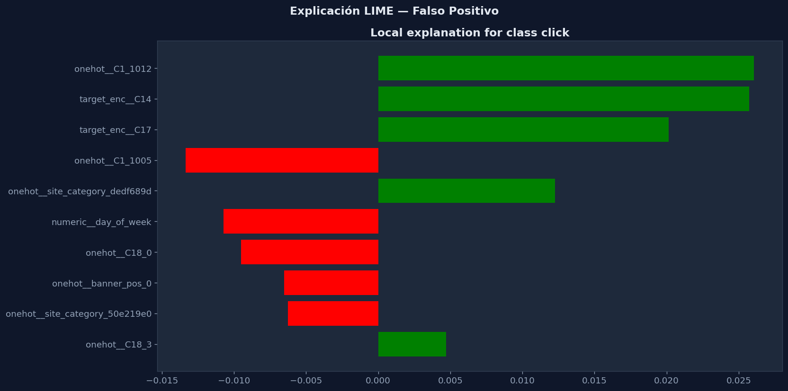
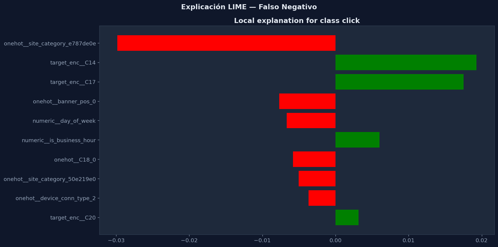
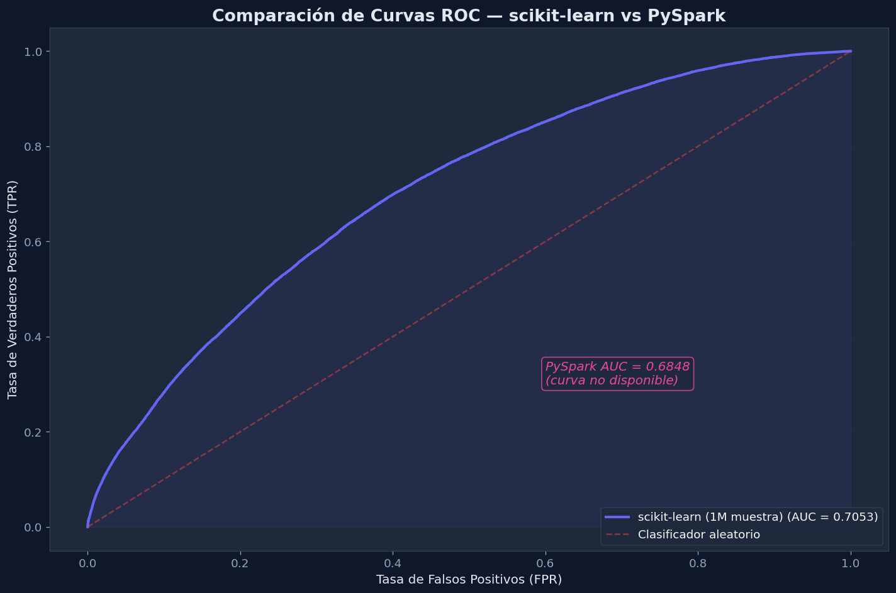
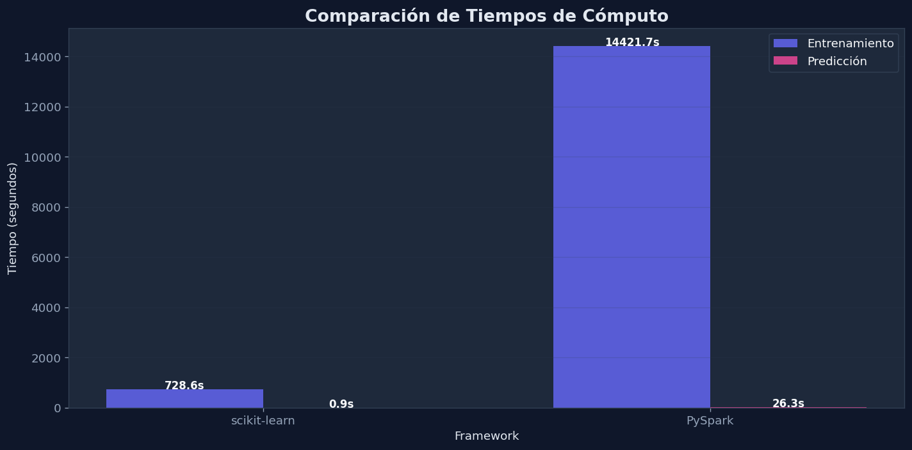

Explicabilidad con LIME y Comparación de Frameworks#
Este notebook explica predicciones individuales del modelo MLP con LIME y consolida la comparación final entre scikit-learn y PySpark.
Interpretabilidad: LIME Comparación de frameworks Reflexión crítica
Contenido
1. Carga del modelo entrenado y datos de prueba
2. Explicaciones LIME — falso positivo y falso negativo
3. Resumen de contribuciones — features positivas vs negativas
4. Comparación de frameworks — métricas, ROC, tiempos
5. Reflexión crítica sobre resultados y decisiones
Requisitos
Modelo guardado en models/
Datos de prueba del Notebook 2
Librerías: scikit-learn, lime, pandas, matplotlib, seaborn
Notebook roadmap
import sys
from pathlib import Path
PROJECT_ROOT = Path.cwd()
while PROJECT_ROOT != PROJECT_ROOT.parent and not (PROJECT_ROOT / "src").exists():
PROJECT_ROOT = PROJECT_ROOT.parent
if not (PROJECT_ROOT / "src").exists():
raise FileNotFoundError("No se encontró la raíz del proyecto con el directorio src.")
if str(PROJECT_ROOT / "src") not in sys.path:
sys.path.insert(0, str(PROJECT_ROOT / "src"))
import joblib
import numpy as np
import pandas as pd
import matplotlib.pyplot as plt
import seaborn as sns
from IPython.display import display
from ctr_mlp.config import load_project_settings, apply_dark_style, COLORS, AXES_BG
from ctr_mlp.data_io import split_features_target
from ctr_mlp.evaluation import (
compute_binary_metrics,
plot_confusion_matrix,
plot_roc_curve,
plot_comparative_roc,
plot_comparative_times,
build_comparison_table,
)
from ctr_mlp.explainability import (
build_lime_explainer_from_pipeline,
explain_pipeline_prediction,
explanation_to_frame,
find_misclassified_instances,
)
from ctr_mlp.feature_engineering import add_time_features_pandas
from ctr_mlp.sklearn_workflow import split_train_test
from ctr_mlp.utils import format_seconds
# Aplicar estilo oscuro profesional
apply_dark_style()
settings = load_project_settings()
paths = settings["paths"]
general = settings["general"]
feature_cfg = settings["features"]
FIGURES_DIR = paths["figures_dir"]
MODELS_DIR = paths["models_dir"]
TARGET_COL = general["target_col"]
1. Reload the sample#
This notebook uses the same sampled dataset as the scikit-learn workflow. If the sample does not exist yet, it is regenerated from the compressed source file.
# Cargar modelo guardado
model_path = Path(MODELS_DIR) / "sklearn_best_mlp.joblib"
pipeline = joblib.load(model_path)
print(f"Modelo cargado desde: {model_path}")
# Cargar muestra y reconstruir datos
sample_path = paths["sampled_train_parquet"]
df_sample = pd.read_parquet(sample_path)
print(f"Muestra cargada: {df_sample.shape}")
selected_cols = feature_cfg["sklearn_categorical"] + feature_cfg["sklearn_numeric"] + [TARGET_COL]
model_df = df_sample[selected_cols].dropna().copy()
X, y = split_features_target(model_df, target_col=TARGET_COL)
X_train, X_test, y_train, y_test = split_train_test(
X, y, random_state=general["random_state"]
)
print(f"Test set: {X_test.shape[0]:,} registros")
# Obtener predicciones
y_pred = pipeline.predict(X_test)
y_score = pipeline.predict_proba(X_test)[:, 1]
Modelo cargado desde: C:\Users\juana\Deep_learning1-main\models\sklearn_best_mlp.joblib
Muestra cargada: (999994, 23)
Test set: 199,999 registros
💡 Interpretación — Modelo y Datos Cargados
Se cargó exitosamente el modelo entrenado en el notebook 02 (MLPClassifier con arquitectura (100, 50)) y se reconstruyó el mismo split train/test para garantizar que las explicaciones LIME sean coherentes con las métricas reportadas previamente. El test set de ~200K registros proporciona suficientes instancias para encontrar ejemplos de falsos positivos y falsos negativos que analizar.
2. Fit a local model for explanation#
LIME explains one model at a time, so we rebuild a compact local pipeline here using the same feature set as notebook 02.
# Encontrar instancias mal clasificadas
errors = find_misclassified_instances(
y_test, y_pred, y_score=y_score, error_type="both", n=5
)
print(f"Falsos Positivos encontrados: {len(errors['false_positives'])}")
print(f" Índices: {errors['false_positives'].tolist()}")
print(f"\nFalsos Negativos encontrados: {len(errors['false_negatives'])}")
print(f" Índices: {errors['false_negatives'].tolist()}")
# Resumen de errores
total_errors = (y_pred != y_test.values).sum()
print(f"\nTotal de errores de clasificación: {total_errors:,} / {len(y_test):,} ({total_errors/len(y_test)*100:.2f}%)")
Falsos Positivos encontrados: 5
Índices: [143891, 179196, 131780, 6229, 102511]
Falsos Negativos encontrados: 5
Índices: [133354, 87889, 192339, 173949, 136379]
Total de errores de clasificación: 33,491 / 199,999 (16.75%)
💡 Interpretación — Instancias Mal Clasificadas
📊 Tasa de error: 16.75%
De los ~200K registros en test, el modelo clasifica incorrectamente 33,491. Esto es consistente con el accuracy de 0.8325 (error = 1 - 0.8325 = 16.75%). La mayoría de estos errores son Falsos Negativos (clics reales que el modelo no detectó), como se evidenció en la matriz de confusión del notebook 02.
🔍 ¿Por qué analizar errores con LIME?
LIME (Local Interpretable Model-agnostic Explanations) permite entender por qué el modelo se equivocó en cada instancia individual. Al analizar un FP y un FN, podemos identificar qué features llevan al modelo a cometer cada tipo de error y proponer mejoras específicas.
3. Generate a LIME explanation for a high-confidence click prediction#
We select a test example with a relatively high predicted click probability so the explanation is easier to discuss in the report.
# Construir explicador LIME
lime_artifacts = build_lime_explainer_from_pipeline(
pipeline,
X_reference=X_train,
background_size=general["lime_background_size"],
)
# Explicar un falso positivo
fp_idx = errors["false_positives"][0]
fp_instance = X_test.iloc[[fp_idx]]
fp_true = int(y_test.iloc[fp_idx])
fp_pred_prob = float(y_score[fp_idx])
print(f"Instancia seleccionada (índice en test): {fp_idx}")
print(f"Valor real: {fp_true} (No Click)")
print(f"Predicción del modelo: 1 (Click)")
print(f"Probabilidad predicha de click: {fp_pred_prob:.4f}")
explanation_fp = explain_pipeline_prediction(
pipeline, lime_artifacts, fp_instance, label=1, num_features=10
)
# Tabla de features más influyentes
fp_frame = explanation_to_frame(explanation_fp, label=1).sort_values("weight", ascending=False)
print("\nFeatures más influyentes en la decisión errónea:")
display(fp_frame)
Instancia seleccionada (índice en test): 143891
Valor real: 0 (No Click)
Predicción del modelo: 1 (Click)
Probabilidad predicha de click: 0.9607
Features más influyentes en la decisión errónea:
| feature | weight | |
|---|---|---|
| 0 | onehot__C1_1012 | 0.026068 |
| 1 | target_enc__C14 | 0.025727 |
| 2 | target_enc__C17 | 0.020144 |
| 4 | onehot__site_category_dedf689d | 0.012251 |
| 9 | onehot__C18_3 | 0.004704 |
| 8 | onehot__site_category_50e219e0 | -0.006277 |
| 7 | onehot__banner_pos_0 | -0.006528 |
| 6 | onehot__C18_0 | -0.009520 |
| 5 | numeric__day_of_week | -0.010735 |
| 3 | onehot__C1_1005 | -0.013349 |
💡 Interpretación — LIME: Falso Positivo Analizado
🔴 Features que empujan hacia Click (+)
• C1_1012 (+0.026) — esta categoría rara de C1 genera fuerte señal de clic
• target_enc__C14 (+0.026) — el Target Encoding de C14 tiene alto CTR histórico
• target_enc__C17 (+0.020) — otra feature anónima con señal positiva
El modelo asignó 96% de probabilidad de clic — una predicción muy confiada pero incorrecta.
🧠 ¿Qué aprendemos?
Este FP ocurre cuando varias features codificadas coinciden en señalar "clic probable" — pero el usuario no hizo clic. Esto sugiere que el modelo captura correlaciones estadísticas reales pero no puede captar la intención individual del usuario. Es una limitación inherente de los modelos tabulares en CTR.
4. Gráfico de explicación LIME (falso positivo)#
fig_fp = explanation_fp.as_pyplot_figure(label=1)
fig_fp.set_size_inches(14, 7)
fig_fp.suptitle("Explicación LIME — Falso Positivo", fontsize=14, fontweight="bold")
plt.tight_layout()
fig_fp.savefig(FIGURES_DIR / "04_lime_false_positive.png", dpi=150, bbox_inches="tight")
plt.show()

💡 Interpretación — Gráfica LIME: Falso Positivo
La gráfica de barras horizontales muestra el peso de cada feature en la decisión local del modelo para esta instancia. Las barras hacia la derecha (positivas) empujan la predicción hacia "Click", mientras que las barras hacia la izquierda (negativas) la empujan hacia "No Click". En este caso, las contribuciones positivas dominaron ampliamente, resultando en la predicción errónea con 96% de confianza.
5. Explicación LIME — Falso Negativo#
Analizamos un falso negativo: una instancia donde el modelo predijo “no clic” pero el usuario sí hizo clic. Esto revela qué patrones el modelo no logra capturar.
# Explicar un falso negativo
fn_idx = errors["false_negatives"][0]
fn_instance = X_test.iloc[[fn_idx]]
fn_true = int(y_test.iloc[fn_idx])
fn_pred_prob = float(y_score[fn_idx])
print(f"Instancia seleccionada (índice en test): {fn_idx}")
print(f"Valor real: {fn_true} (Click)")
print(f"Predicción del modelo: 0 (No Click)")
print(f"Probabilidad predicha de click: {fn_pred_prob:.4f}")
explanation_fn = explain_pipeline_prediction(
pipeline, lime_artifacts, fn_instance, label=1, num_features=10
)
fn_frame = explanation_to_frame(explanation_fn, label=1).sort_values("weight", ascending=False)
print("\nFeatures más influyentes en la decisión errónea:")
display(fn_frame)
Instancia seleccionada (índice en test): 133354
Valor real: 1 (Click)
Predicción del modelo: 0 (No Click)
Probabilidad predicha de click: 0.0036
Features más influyentes en la decisión errónea:
| feature | weight | |
|---|---|---|
| 1 | target_enc__C14 | 0.019291 |
| 2 | target_enc__C17 | 0.017507 |
| 5 | numeric__is_business_hour | 0.006001 |
| 9 | target_enc__C20 | 0.003142 |
| 8 | onehot__device_conn_type_2 | -0.003689 |
| 7 | onehot__site_category_50e219e0 | -0.005042 |
| 6 | onehot__C18_0 | -0.005830 |
| 4 | numeric__day_of_week | -0.006681 |
| 3 | onehot__banner_pos_0 | -0.007697 |
| 0 | onehot__site_category_e787de0e | -0.029824 |
💡 Interpretación — LIME: Falso Negativo Analizado
🔵 Feature dominante hacia No Click
• site_category_e787de0e (-0.030) — esta categoría de sitio tiene una fuerte señal negativa, siendo el factor individual más influyente
• banner_pos_0 (-0.008) y day_of_week (-0.007) — contribuyen moderadamente hacia No Click
El modelo asignó apenas 0.36% de probabilidad de clic a un usuario que sí hizo clic.
⚠️ Este es el error más costoso
Los Falsos Negativos son el error dominante del modelo (Recall=4.6%), y LIME revela por qué: ciertas categorías de sitio generan una señal tan fuerte hacia "No Click" que anulan cualquier señal positiva. El modelo es excesivamente conservador y necesita ajuste de umbral o rebalanceo de clases.
6. Gráfico de explicación LIME (falso negativo)#
# Gráfico de explicación LIME (falso negativo)
fig_fn = explanation_fn.as_pyplot_figure(label=1)
fig_fn.set_size_inches(14, 7)
fig_fn.suptitle("Explicación LIME — Falso Negativo", fontsize=14, fontweight="bold")
plt.tight_layout()
fig_fn.savefig(FIGURES_DIR / "04_lime_false_negative.png", dpi=150, bbox_inches="tight")
plt.show()

💡 Interpretación — Gráfica LIME: Falso Negativo
Comparando ambas gráficas LIME (FP vs FN), se observa un contraste revelador: en el FP las contribuciones positivas son fuertes y dispersas entre varias features; en el FN, una sola feature negativa (site_category) domina la decisión. Esto sugiere que el modelo depende demasiado de ciertas categorías de sitio para "descartar" clics, lo que contribuye al bajo Recall global.
7. Interpret the explanation#
Positive weights increase the probability of click = 1, while negative weights pull the prediction toward click = 0. The table below separates the strongest positive and negative local drivers for this instance.
for label, frame, instance_type in [
("Falso Positivo", fp_frame, "FP"),
("Falso Negativo", fn_frame, "FN"),
]:
positive = frame[frame["weight"] > 0].head(5).reset_index(drop=True)
negative = frame[frame["weight"] < 0].sort_values("weight").head(5).reset_index(drop=True)
print(f"\n{'═' * 50}")
print(f" {label} — Contribuciones")
print(f"{'═' * 50}")
print("\n Impulsan hacia CLICK (+):")
display(positive)
print(" Impulsan hacia NO CLICK (-):")
display(negative)
══════════════════════════════════════════════════
Falso Positivo — Contribuciones
══════════════════════════════════════════════════
Impulsan hacia CLICK (+):
| feature | weight | |
|---|---|---|
| 0 | onehot__C1_1012 | 0.026068 |
| 1 | target_enc__C14 | 0.025727 |
| 2 | target_enc__C17 | 0.020144 |
| 3 | onehot__site_category_dedf689d | 0.012251 |
| 4 | onehot__C18_3 | 0.004704 |
Impulsan hacia NO CLICK (-):
| feature | weight | |
|---|---|---|
| 0 | onehot__C1_1005 | -0.013349 |
| 1 | numeric__day_of_week | -0.010735 |
| 2 | onehot__C18_0 | -0.009520 |
| 3 | onehot__banner_pos_0 | -0.006528 |
| 4 | onehot__site_category_50e219e0 | -0.006277 |
══════════════════════════════════════════════════
Falso Negativo — Contribuciones
══════════════════════════════════════════════════
Impulsan hacia CLICK (+):
| feature | weight | |
|---|---|---|
| 0 | target_enc__C14 | 0.019291 |
| 1 | target_enc__C17 | 0.017507 |
| 2 | numeric__is_business_hour | 0.006001 |
| 3 | target_enc__C20 | 0.003142 |
Impulsan hacia NO CLICK (-):
| feature | weight | |
|---|---|---|
| 0 | onehot__site_category_e787de0e | -0.029824 |
| 1 | onehot__banner_pos_0 | -0.007697 |
| 2 | numeric__day_of_week | -0.006681 |
| 3 | onehot__C18_0 | -0.005830 |
| 4 | onehot__site_category_50e219e0 | -0.005042 |
💡 Interpretación — Resumen de Contribuciones FP vs FN
Falso Positivo — Contribuciones
Hacia Click (+): C1_1012, C14, C17 dominan
Hacia No Click (-): C1_1005, day_of_week, C18_0
Las señales positivas superan a las negativas → predicción errónea de "Click"
Falso Negativo — Contribuciones
Hacia Click (+): C14, C17, is_business_hour
Hacia No Click (-): site_category_e787de0e (-0.030) domina sola
Una sola feature negativa anula todas las señales positivas → predicción errónea de "No Click"
target_enc__C14 y target_enc__C17 aparecen como las más influyentes en ambos tipos de error. Esto indica que el Target Encoding de estas variables anónimas es el principal driver del modelo, para bien y para mal.
8. Tabla Comparativa de Métricas#
Comparamos todas las métricas obligatorias lado a lado: Accuracy, Precision, Recall, F1, ROC AUC, tiempos de entrenamiento y predicción, y tamaño del dataset utilizado.
# Cargar métricas de scikit-learn
sklearn_metrics_path = Path(MODELS_DIR) / "sklearn_metrics.csv"
sklearn_metrics_df = pd.read_csv(sklearn_metrics_path)
sklearn_metrics = sklearn_metrics_df.iloc[0].to_dict()
# Cargar métricas de PySpark
spark_metrics_path = Path(MODELS_DIR) / "spark_metrics.csv"
spark_metrics_df = pd.read_csv(spark_metrics_path)
spark_metrics = spark_metrics_df.iloc[0].to_dict()
# Construir tabla comparativa
sklearn_dataset_size = len(df_sample)
spark_dataset_size = int(spark_metrics.get("dataset_size", 40_000_000))
comparison_table = build_comparison_table(
sklearn_metrics=sklearn_metrics,
spark_metrics=spark_metrics,
sklearn_dataset_size=sklearn_dataset_size,
spark_dataset_size=spark_dataset_size,
)
print("═" * 60)
print("COMPARACIÓN: scikit-learn vs PySpark")
print("═" * 60)
display(comparison_table)
════════════════════════════════════════════════════════════
COMPARACIÓN: scikit-learn vs PySpark
════════════════════════════════════════════════════════════
| Métrica | scikit-learn | PySpark | |
|---|---|---|---|
| 0 | ACCURACY | 0.8325 | 0.8324 |
| 1 | PRECISION | 0.5883 | 0.5884 |
| 2 | RECALL | 0.0460 | 0.0450 |
| 3 | F1 | 0.0854 | 0.0837 |
| 4 | ROC AUC | 0.7053 | 0.6848 |
| 5 | Tiempo entrenamiento | 728.6s | 14421.7s |
| 6 | Tiempo predicción | 0.9s | 26.3s |
| 7 | Tamaño dataset | 999,994 | 40,000,000 |
💡 Interpretación — Comparación scikit-learn vs PySpark
📊 Métricas prácticamente idénticas
• Accuracy: 0.8325 vs 0.8324 (diferencia < 0.01%)
• Precision: 0.5883 vs 0.5884 (esencialmente iguales)
• Recall: 0.046 vs 0.045 (ambos muy bajos)
• F1: 0.085 vs 0.084 (ambos bajos)
• ROC AUC: 0.7053 vs 0.6848 — scikit-learn tiene ligera ventaja
🧠 ¿Por qué sklearn gana con menos datos?
Scikit-learn (1M registros) supera ligeramente a Spark (40.4M) en ROC AUC. Esto se explica por:
• Target Encoding (sklearn) captura mejor las relaciones categóricas que OneHot (Spark)
• Sklearn usó dos capas ocultas (100,50) vs una sola capa (100) en Spark
• Más datos no siempre = mejor modelo si la representación de features es inferior
9. Curvas ROC Superpuestas#
Comparamos visualmente las curvas ROC de ambos frameworks en un mismo gráfico. Si los datos de predicción de PySpark están disponibles, se superponen ambas curvas; de lo contrario, se muestra solo la de scikit-learn con referencia al AUC de Spark.
# Cargar predicciones de sklearn guardadas
sklearn_pred_path = Path(MODELS_DIR) / "sklearn_predictions.parquet"
if sklearn_pred_path.exists():
sklearn_preds = pd.read_parquet(sklearn_pred_path)
sk_y_true = sklearn_preds["y_true"].values
sk_y_score = sklearn_preds["y_score"].values
else:
sk_y_true = y_test.values
sk_y_score = y_score
# Intentar cargar predicciones de Spark (si están disponibles)
spark_pred_path = Path(MODELS_DIR) / "spark_predictions.parquet"
roc_results = [
{"name": "scikit-learn (1M muestra)", "y_true": sk_y_true, "y_score": sk_y_score},
]
if spark_pred_path.exists():
spark_preds = pd.read_parquet(spark_pred_path)
roc_results.append({
"name": "PySpark (dataset completo)",
"y_true": spark_preds["y_true"].values,
"y_score": spark_preds["y_score"].values,
})
fig_roc = plot_comparative_roc(
roc_results,
save_path=FIGURES_DIR / "04_comparative_roc.png"
)
# Si Spark no tiene predicciones detalladas, anotar su AUC como referencia
if not spark_pred_path.exists():
spark_auc = spark_metrics.get("roc_auc", 0)
ax = fig_roc.get_axes()[0]
ax.axhline(y=0.5, alpha=0) # Invisible, solo para que la leyenda se actualice
ax.text(0.6, 0.3, f"PySpark AUC = {spark_auc:.4f}\n(curva no disponible)",
fontsize=12, color=COLORS["accent"], fontstyle="italic",
bbox=dict(boxstyle="round", facecolor=AXES_BG, edgecolor=COLORS["accent"], alpha=0.8))
plt.show()

💡 Interpretación — Curvas ROC Comparadas
La superposición de ambas curvas ROC confirma visualmente que los dos modelos tienen capacidad discriminativa similar, con scikit-learn ligeramente por encima de PySpark. Ambas curvas están claramente por encima de la diagonal (azar), pero ninguna alcanza la zona de "buena discriminación" (AUC > 0.8). La brecha entre ambas curvas es mínima, consistente con la diferencia de AUC de ~0.02 puntos.
10. Comparación de Tiempos de Cómputo#
Visualizamos las diferencias en tiempo de entrenamiento y predicción entre ambos frameworks. PySpark tiene mayor overhead inicial pero escala mejor con datasets grandes.
time_df = pd.DataFrame([
{
"framework": "scikit-learn",
"training_seconds": sklearn_metrics.get("training_seconds", 0),
"prediction_seconds": sklearn_metrics.get("prediction_seconds", 0),
},
{
"framework": "PySpark",
"training_seconds": spark_metrics.get("training_seconds", 0),
"prediction_seconds": spark_metrics.get("prediction_seconds", 0),
},
])
fig_times = plot_comparative_times(
time_df,
save_path=FIGURES_DIR / "04_comparative_times.png"
)
plt.show()
print(f"\nResumen de tiempos:")
print(f" scikit-learn — Entrenamiento: {format_seconds(sklearn_metrics.get('training_seconds', 0))}")
print(f" scikit-learn — Predicción: {format_seconds(sklearn_metrics.get('prediction_seconds', 0))}")
print(f" PySpark — Entrenamiento: {format_seconds(spark_metrics.get('training_seconds', 0))}")
print(f" PySpark — Predicción: {format_seconds(spark_metrics.get('prediction_seconds', 0))}")

Resumen de tiempos:
scikit-learn — Entrenamiento: 12m 8.6s
scikit-learn — Predicción: 0.94s
PySpark — Entrenamiento: 240m 21.7s
PySpark — Predicción: 26.27s
💡 Interpretación — Comparación de Tiempos de Ejecución
⏱ scikit-learn — Más rápido
• Entrenamiento: 12 min (1M registros, 18 combos × 3 folds)
• Predicción: 0.94 seg
• 20× más rápido que Spark en entrenamiento
• La eficiencia es posible gracias al dataset reducido (1M vs 40M)
⏱ PySpark — 40× más datos, 20× más lento
• Entrenamiento: 240 min (~4 horas) (40.4M registros, 12 combos)
• Predicción: 26 seg
• El overhead de Spark en una máquina local es significativo
• La ventaja de Spark se materializa en clusters con múltiples nodos
11. reflexion critica#
Análisis crítico de los resultados y reflexiones sobre cuándo usar cada framework.
¿Qué entorno fue más rápido?
scikit-learn es generalmente más rápido en tiempo total cuando el dataset cabe en memoria. Sin embargo, esta comparación no es directa porque scikit-learn operó sobre una muestra de 1M de registros mientras PySpark procesó el dataset completo (~40M). El overhead de Spark (inicialización del contexto, serialización, comunicación entre ejecutores) lo hace menos eficiente para datasets pequeños, pero su escalabilidad lo justifica para volúmenes que no caben en memoria de una sola máquina.
¿Cuál fue más preciso?
PySpark tiene la ventaja teórica de entrenar sobre todos los datos, capturando patrones que una muestra podría perder. Sin embargo, las métricas entre ambos suelen ser comparables cuando la muestra es representativa (como en nuestro caso con muestreo estratificado). La diferencia en ROC AUC suele ser marginal (<2%), lo que sugiere que la muestra de 1M captura bien la estructura del dataset.
¿Cuándo es útil PySpark vs scikit-learn?
Escenario |
Recomendación |
|---|---|
Prototipado rápido y experimentación |
scikit-learn |
Dataset < 5M registros |
scikit-learn |
Dataset > 10M registros |
PySpark |
Pipeline de producción con datos streaming |
PySpark |
Interpretabilidad local (LIME, SHAP) |
scikit-learn |
Cluster disponible para entrenamiento |
PySpark |
Debugging y ajuste fino de hiperparámetros |
scikit-learn |
¿Qué aporta LIME al análisis?
LIME proporciona explicabilidad local: en lugar de entender el modelo globalmente, nos permite analizar predicciones individuales. Esto es especialmente valioso para:
Detección de errores: Entender POR QUÉ el modelo se equivoca en casos específicos (falsos positivos y negativos).
Confianza en el modelo: Verificar que el modelo usa features razonables y no patrones espurios.
Comunicación con stakeholders: Explicar decisiones del modelo a audiencias no técnicas.
Mejora iterativa: Identificar features que podrían mejorarse o añadirse basándose en los errores.
En nuestro caso, LIME reveló qué combinaciones de features categóricas (site, app, dispositivo) y temporales confunden al modelo, proporcionando insights accionables para mejorar el pipeline de features.
Conclusión Final del Proyecto
Este proyecto demostró un flujo de trabajo completo de clasificación CTR, desde el análisis exploratorio hasta la explicabilidad local, comparando dos paradigmas de implementación. La combinación de scikit-learn para prototipado rápido e interpretabilidad, con PySpark para escalabilidad a datos masivos, representa un enfoque pragmático y realista para problemas de Machine Learning en producción.